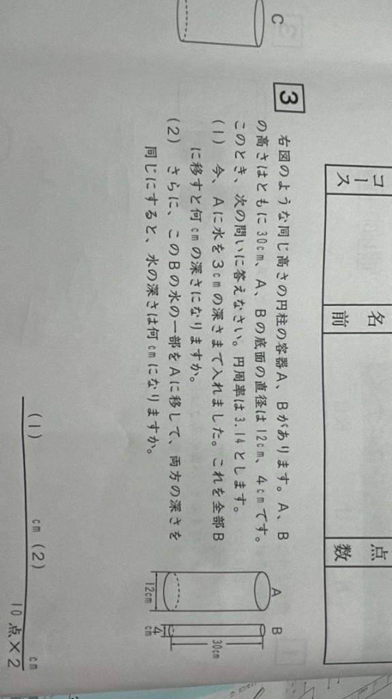

円柱の水の移し替え（深さの変化）
日本語
中文
English
自动轮播 OFF
原题
解法
动画
問題図

問題抽出
与えられた条件
求めるもの
二つの解法
先生モード OFF
次のステップを表示
方法 A：体積公式
方法 B：底面積の比
交叉検証
方法
問(1) 答え
問(2) 答え
確認
水の移し替えシミュレーション
A
r = 12 cm
3 cm
高さ
B
r = 4 cm
0 cm
30 cm
→ 移し替え
フェーズ 1/3
① 初期状態
② Aの水をBへ
③ 等しい深さに
▶ 自動再生